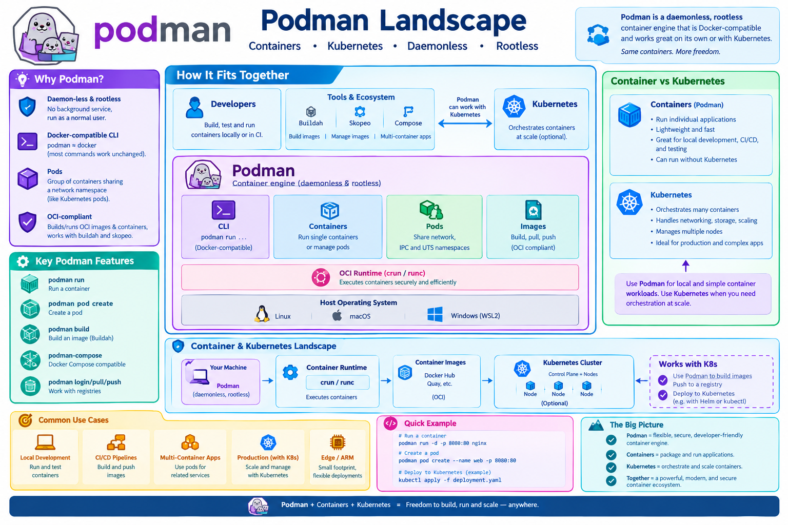

Podman
A comprehensive guide to using Podman for container management, from basic installation and rootless execution to advanced concepts like Pods and architecture planning.
Learning Objectives
By the end of this guide, you will be able to: 1. Install and configure Podman on various operating systems. 2. Execute container operations using the Docker-compatible CLI. 3. Implement secure, rootless containers to enhance host security. 4. Orchestrate groups of containers using Pods for shared networking. 5. Build OCI-compliant images using Dockerfiles and Buildah. 6. Plan container-based architectures using mind-mapping techniques.
{kind=link}

1. What is Podman?
Podman (Pod Manager) is an open-source, daemonless container engine for developing, managing, and running OCI containers on your local machine. Unlike other container engines, it does not rely on a central background process to manage containers.
Why use Podman?
- Daemon‑less & Rootless: There is no background service (dockerd) running as root. You can run containers as a normal user, which significantly reduces the attack surface of the host.
- Docker‑compatible CLI: The podman command is designed to be a drop-in replacement for docker. Most commands work identically.
- Pods: Podman introduces the concept of "Pods"—groups of one or more containers that share the same network namespace, similar to how Kubernetes operates.
- OCI‑compliant: It generates and runs images that follow the Open Container Initiative (OCI) standard, making it compatible with tools like buildah and skopeo.
2. Installing Podman
Installing Podman is straightforward across most Linux distributions and is available for macOS and Windows via virtualization layers.
| OS | Command |
|---|---|
| Fedora / RHEL 9 | sudo dnf -y install podman |
| CentOS 8 / Rocky 9 | sudo dnf -y module enable container-tools && sudo dnf -y install podman |
| Ubuntu 22.04+ | sudo apt update && sudo apt -y install podman |
| macOS (Homebrew) | brew install podman |
| Windows (WSL2) | Install a Linux distro in WSL2 then follow the Linux steps. |
Verification
After installation, run podman info. You should see rootless: true in the host information if you are running as a non-privileged user.
3. Basic Commands
Because Podman aims for compatibility with the Docker CLI, the learning curve for existing Docker users is almost zero.
| Goal | Podman command |
|---|---|
| List images | podman images |
| Pull an image | podman pull quay.io/centos/centos:stream8 |
| Run a container (interactive) | podman run -it --rm quay.io/centos/centos:stream8 bash |
| Run a container in background | podman run -d --name web -p 8080:80 nginx:alpine |
| View running containers | podman ps |
| Stop / remove | podman stop web && podman rm web |
| Show logs | podman logs web |
| Exec inside a running container | podman exec -it web sh |
| Copy files →/from container | podman cp <src> <container>:/dest |
If you have existing scripts that call docker, you can create a symbolic link (shim) to redirect those calls to Podman:
docker command.
4. Rootless Containers
One of Podman's most powerful features is the ability to run containers without root privileges. This is the default behavior for non-root users.
# Verify you are running in rootless mode
podman info | grep rootless
# Expected output: rootless: true
Rootless containers use user namespaces to map the user ID (UID) inside the container to your own UID on the host. This ensures that even if a process escapes the container, it does not have root access to your physical machine.
If you require privileged operations (e.g., accessing /dev/kmsg or specific kernel modules), you can use the --privileged flag, but this should be avoided unless absolutely necessary.
5. Working with Pods
A Pod is a group of one or more containers that share the same network namespace, including the IP address and ports. This is a fundamental concept in Kubernetes that Podman brings to the local environment.
# 1. Create a pod named “myapp” exposing port 8080 on the host
podman pod create --name myapp -p 8080:80
# 2. Run a container inside the pod (it inherits the pod's network)
podman run -d --name nginx --pod myapp nginx:alpine
# 3. Run a side‑car container (e.g., log collector) in the same pod
podman run -d --name logger --pod myapp \
-v /var/log:/var/log alpine tail -F /var/log/nginx/access.log
# 4. List pods to see shared IP address
podman pod ps
When a pod is stopped or removed, all containers associated with that pod are also stopped/removed:
6. Building Images
Podman can build images using the same Dockerfile syntax used by Docker, but it also integrates with buildah for more advanced, scriptable image creation.
# Build an image from a Dockerfile in the current directory
podman build -t my-custom-app .
# Run the newly built image
podman run -it --rm my-custom-app
For more advanced users, buildah allows you to build images without a Dockerfile by interacting directly with the container filesystem, which can result in smaller, more secure images.
7. Architecture Planning with Mind-Mapping
Before containerizing an application, it is best practice to visualize the architecture. Mind-mapping helps distill complex systems into a clear hierarchy of services, dependencies, and security zones.
Recommended Tools
| Tool | Platform | Use Case |
|---|---|---|
| FreeMind | Cross-platform | Classic, open-source radial maps. |
| XMind | Cross-platform | Professional, polished layouts and templates. |
| MindMeister | Web-based | Collaborative planning and sharing. |
| Obsidian | Desktop | For those who prefer Markdown-based knowledge graphs. |
Mind-Map Best Practices
- One word per branch: Forces distillation of ideas.
- Color Coding: Use 2-3 colors to distinguish between different layers (e.g., Frontend, Backend, Database).
- Radial Layout: Let branches fan out naturally to avoid tangled lines.
- Iterate: Brainstorm first, then group and clean up the structure.
Sample Structure: Deploying a Web App
[Deploying a Container-Based Web App]
├─ Architecture
│ ├─ Front-end (NGINX)
│ ├─ Back-end (Flask/Django)
│ └─ Database (PostgreSQL)
├─ CI/CD
│ ├─ GitHub Actions
│ ├─ Build image (Podman)
│ └─ Deploy to Prod (K8s/Podman-Compose)
├─ Security
│ ├─ Secrets (Vault/Env-files)
│ ├─ TLS (Let's Encrypt)
│ └─ Scanning (Trivy)
└─ Monitoring
├─ Logs (EFK)
├─ Metrics (Prometheus)
└─ Alerts (Grafana/Aodh)
8. Summary & Workflow
The most effective way to deploy a system is to combine the blueprint (Mind-map) with the engine (Podman).
Example Workflow:
1. Mind-map: Identify all services and their relationships.
2. Podman: Build the images for each service and define a podman-compose.yml file that mirrors the mind-map branches.
3. Export: Embed the architecture mind-map in your project README and provide the compose file as the implementation.
Appendix
Tool Comparison: Podman vs. Docker
| Feature | Docker | Podman |
|---|---|---|
| Architecture | Client-Server (Daemon-based) | Daemonless |
| Privileges | Traditionally Root-based | Rootless by default |
| Security | Daemon is a single point of failure | No privileged daemon needed |
| OCI Compliance | Yes | Yes |
| Ecosystem | Industry standard, vast | Growing, highly compatible |
| Kubernetes | Requires orchestration tool | Native support for Pods |
References & Further Reading
| Topic | Link |
|---|---|
| Podman Official Docs | https://docs.podman.io |
| Podman Cheat Sheet | https://github.com/containers/podman/blob/main/docs/tutorials/podman.pdf |
| Podman-Compose GitHub | https://github.com/containers/podman-compose |
| OCI Specification | https://opencontainers.org |
Assignments
Hands-on Challenges
- Basic Setup: Install Podman and verify that you are running in rootless mode using
podman info. - Image Management: Pull an NGINX image, run it in the background on port 8080, and verify the welcome page in your browser.
- Pod Orchestration: Create a Pod named
web-stack, and deploy both an NGINX container and a Redis container inside it. Verify they can communicate vialocalhost. - Custom Image: Create a simple
Dockerfilefor a Python application, build it withpodman build, and run the resulting container. - Architecture Mapping: Create a mind-map of a three-tier application (Frontend, API, DB) and implement it using a Podman Pod.